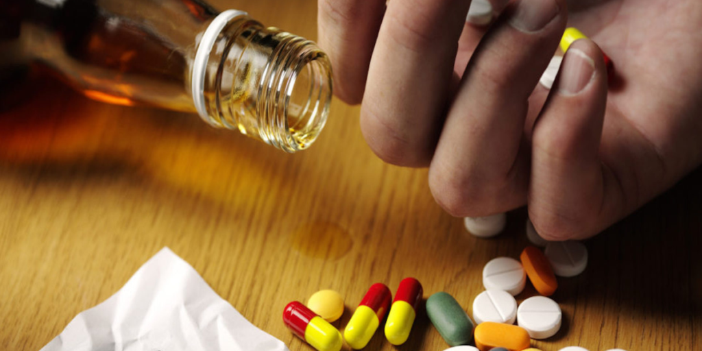

O que é dependência química?
Considerado um transtorno mental, além de um problema social pela Organização Mundial de Saúde (OMS), a dependência química é tida como doença crônica, que comumente atinge indivíduos que fazem o uso constante de determinadas drogas. O portador desse tipo de distúrbio acaba por não conseguir conter o vício, afetando sua vida psíquica, emocional, física e, consequentemente, a vida social.
Como se contraí?
Substâncias como a maconha, cocaína e o álcool ainda são comuns nos dias atuais. Tendem a causar um desequilíbrio no metabolismo químico do organismo, levando a dependência química da droga.
Síntomas
A dependência a uma droga é caracterizada pelo descontrole do indivíduo no uso da substância, que aos poucos o desintegra da sociedade.
Com o objetivo de sentir novamente os sintomas de prazer, ou ainda, para eliminar o mal-estar que se sente quando há a interrupção da droga, o indivíduo tende a repetir o uso daquela substância.
Critérios de diagnóstico médico:
Tolerância, senso de compulsão, abstinência, desejo de reduzir ou controlar o consumo, porém, sem sucesso, Abandono de atividades prazerosas alternativas, persistência ao uso
AVISO: AS INFORMAÇÕES SÃO DE USO INFORMATIVO, NÃO SUBSTITUEM UM DIAGNOSTICO MÉDICO.